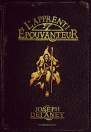

2015
Juin
Mai
-
02 —
Mes lectures récentes

Le fabuleux Maurice et ses rongeurs savants (Terry Pratchett), Journal d’un écrivain en pyjama (Dany Laferrière), L’apprenti épouvanteur (Joseph Delaney) - 02 — La face cachée de Margo de John Green